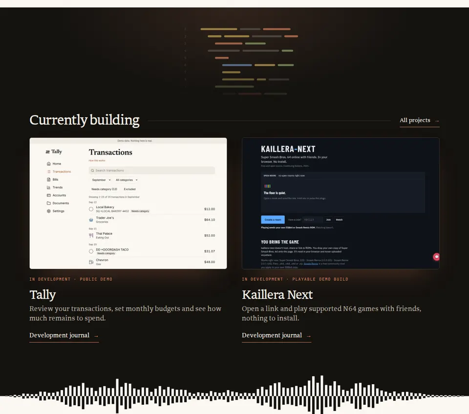
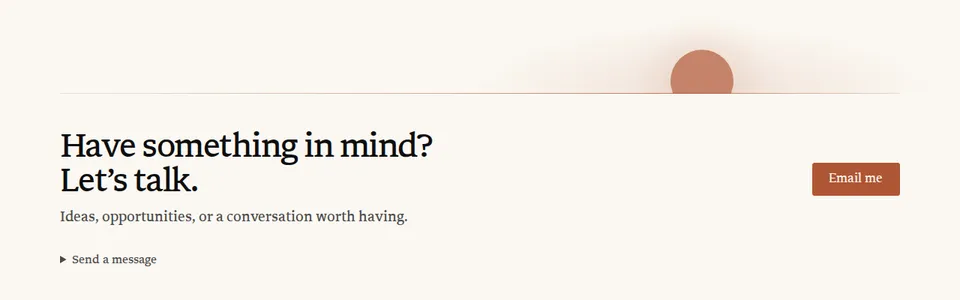

Hallmark flagged four pieces of motion on Home and About. All four are choices you made on September 27 and recorded in docs/website-content-model.md, so nothing changes until you pick. For each one, option A shows the site as it is today and the other options are alternatives built from the site’s own colours, type, art and copy. Scroll inside a frame to feel it, or press Replay.
Effort: S is a small edit, mostly CSS or deletions, plus the matching doc lines; M adds or rewrites logic, with a test or two and the docs. Line numbers are at PR #204’s head f0abd1f (the audit cites 26e764a; some lines have moved since). Every option keeps the copy, the palette and the reviewed art. Section reveals (fade up as you scroll) belong to another decision and are left out of these demos, so only the motion in question shows.
The demos follow your device’s motion setting. With motion off they show the resting frames, which is exactly what reduced-motion visitors see on the site.
D2.1 · Your call 2 · Home and About
How much of Home and About should move with the scroll, on desktop and on phones?
Hallmark flagged the scroll-scrubbed and parallax layers as its most serious motion tell (its verifiers rated it major at most, not critical). Its fix is to remove them, or at least keep nothing scroll-linked below 40rem, because motion tied to the scroll bar reads as decoration, keeps a scroll listener running and makes phones busy.
Where you decided it:docs/website-content-model.md:246-282 (Home motion, September 27) and :284-293 (About), with the drift recorded in docs/asset-reviews/studio-v1.md:12. Code: src/scripts/scroll-scenes.ts:57-85, src/scripts/home-worlds.ts, src/components/Hero.astro, src/pages/index.astro, src/pages/about.astro.
KindLayerWhereWhat it does today
CrossingDark screenHome, Currently buildingArrives as a rounded panel and widens to full width as you scroll.
CrossingWaveform edgeHome, end of the screenBars swell as it crosses the middle of the window and fall silent at the edges.
CrossingHorizon sunHome, ContactRises over the contact rule as the page ends; its glow fades in.
CrossingChapter pathAbout, between chaptersDraws as far as you have scrolled (already hidden on phones).
DriftStudio pictureHome heroLifts up to 32px as you scroll (16px on phones) and leans up to 10px toward a mouse pointer.
DriftCode rowsHome, top of the screenSlide 40px as the screen widens.
DriftNotebookHome, WritingFloats 18px up or down with the scroll.
DriftTerrainAbout, introductionLifts up to 28px with the scroll.
Crossing: carries you from one world to the next. Drift: a picture moving at a different speed from the page, which is the classic parallax Hallmark describes.
D2.1-AKeep as is
Today
Replay scrolls each frame from the top, like a visitor. Scroll inside a frame to stop it and steer.
thesuperhuman.us/ · desktop 1280 × 800
Home · phone 390 × 844
What to look for
Scroll slowly. The screen widens with you, the bars swell in the middle of the window and the sun rises as the page ends. Point at the studio to see it lean. On About, the path draws as you go and the terrain lifts.
Compare with today’s CI capture

Home at 1280 wide, CI capture pr-199/08e9b22 (reduced motion, so every layer is at rest).
What changes
Nothing. Four crossings and four drift layers follow the scroll on every screen size; phones get a smaller studio lift and a narrower screen arrival.
Why keep it
It is the idea you asked for on September 27: scrolling moves you through the studio, the screen, sound and the horizon. It passed the motion release gate (docs/prelaunch-qa-2026-09-27-motion.md), and reduced motion already shows every resting frame.
Trade-off
Hallmark’s strongest motion flag stays. A scroll listener runs on Home and About, and phones get motion that tracks the thumb.
Effort
None
Files
None.
Guideline check
As built and gated on September 27. Copy, tokens and art unchanged; reduced motion shows the resting frames; nothing that plays by itself runs longer than five seconds.
D2.1-BWorlds arrive once
Calmest
Scroll back up and down after a replay: nothing plays twice.
thesuperhuman.us/ · desktop 1280 × 800
Home · phone 390 × 844
What to look for
Each crossing plays by itself once it is in view: the screen widens, the bars swell to rest, the sun rises, each About path draws. The studio, code rows, notebook and terrain stay put.
What changes
Each crossing plays once, in about a second and a half, when it comes into view, then rests. All four drift layers stop. The scroll listener goes; an IntersectionObserver starts each scene, like the reveals elsewhere on the site.
Why it could be better
Calmest on phones and the most consistent with the rest of the site, where things reveal once. Hallmark would have nothing scroll-linked left to flag.
Trade-off
Loses the feeling of moving through the worlds with your own scroll, which was the point of the September 27 request. A fast scroller sees the screen finish widening after it has already arrived.
Effort
MThe progress loop becomes a one-time play, with tests and docs.
Copy, tokens and art unchanged. Each scene rests within two seconds (WCAG 2.2.2 allows five). Reduced motion keeps today’s resting frames; a keyboard user who lands in a block still sees it at once.
D2.1-CScrub on desktop, still on phones
Hallmark’s fallback
Compare the two frames side by side.
thesuperhuman.us/ · desktop 1280 × 800
Home · phone 390 × 844
What to look for
The desktop frame behaves exactly like A. The phone frame behaves like B: each crossing plays once and nothing drifts.
What changes
At the phone layout (800px and narrower) the crossings play once, as in B, and the drift stops. Wider screens stay as they are today.
Why it could be better
Keeps the idea where there is room for it and a mouse or trackpad to steer it. Phones, where a thumb flick moves the page fast, get a calm page.
Trade-off
Two behaviours to maintain and test at every width. Phone visitors never see the worlds move with the scroll. Hallmark asked for 40rem (640px); 800px matches the site’s existing phone layout, so most tablets held upright get the phone behaviour.
Effort
MA width check beside the reduced-motion check, plus phone rules.
Files
src/scripts/scroll-scenes.ts (width check in runMotion), src/scripts/home-worlds.ts, src/pages/index.astro and src/components/Hero.astro (phone rules), src/pages/about.astro (terrain on phones), tests/lib/scroll-scenes.test.ts, docs/website-content-model.md:246-293, the three asset reviews.
Guideline check
Copy, tokens and art unchanged; reduced motion unchanged. Resizing across 800px must switch behaviour cleanly, which becomes a release QA check.
D2.1-DKeep the crossings, drop the drift
Recommended
Recommended because it keeps the worlds you asked for and removes only the motion that carries no meaning, in the smallest change.
Watch the studio and the notebook: they no longer float.
thesuperhuman.us/ · desktop 1280 × 800
Home · phone 390 × 844
What to look for
The screen still widens with your scroll, the bars still swell and the sun still rises. The studio, code rows, notebook and About terrain sit still.
What changes
The three Home crossings and the About path still follow the scroll on every screen. The four drift layers stop: the studio no longer lifts or leans toward the pointer (pointing at it still replays its scene), and the code rows, notebook and terrain sit still.
Why it could be better
The crossings are what make scrolling change worlds. The drift is the generic parallax Hallmark describes, and 18 to 32 pixels of float is not something a visitor would miss. It removes the parallax half of the flag with the smallest edit.
Trade-off
Still a scroll listener, and still scroll-linked on phones, so a strict Hallmark pass would flag the crossings again. If phones still feel busy afterwards, C’s phone rule can be added on top.
Effort
SMostly deletions.
Files
src/components/Hero.astro (--lift and the pointer transform, data-scene="studio"), src/scripts/home-worlds.ts (pointer drift handler; the replay on pointing stays), src/pages/index.astro (notebook transform and data-scene="notebook", the code-row slide), src/pages/about.astro (terrain transform and data-scene="terrain"), docs/website-content-model.md:257-293, docs/asset-reviews/studio-v1.md:12, notebook-v1.md:12, terrain-v1.md:11.
Guideline check
Copy, tokens and art unchanged. Less motion than today; reduced motion and the resting frames are identical to today; no new dependency.
D2.2 · Your call 3 · Home, Currently building
What should a project card do when you point at it?
Hallmark counted four hover signals firing at once on each card (the capture leans, its terracotta glow grows, the link turns terracotta and its arrow nudges) and separately flagged a coloured shadow that grows on a dark ground. Its fix keeps only the link colour. The link’s colour and arrow are the shared .site-link style, which the audit treats as one gesture, so they stay in every option.
Where you decided it:docs/website-content-model.md:265, “Project captures glow like screens and lean toward a fine pointer.” Code: src/pages/index.astro:174-178 and the tilt in src/scripts/scroll-scenes.ts:147-157. Shown at real size on the screen world’s tokens. With a mouse, point at a card or Tab to its link; on touch, press Replay to watch a simulated pointer pass over it.
D2.2-AKeep as is
Today
In development · public demo
Tally
Review your transactions, set monthly budgets and see how much remains to spend.
Nothing. With a mouse or trackpad, pointing at a card leans the capture toward the pointer, grows its glow, turns the link terracotta and nudges its arrow.
Why keep it
The glow and the lean are the screen world’s idea, and touch screens already see only the resting glow.
Trade-off
Four signals at once is Hallmark’s gate 13, and the growing coloured shadow is its glow-on-dark tell.
Effort
None
Files
None.
Guideline check
As built. Tilt only with a fine pointer and off under reduced motion; focus ring unchanged.
D2.2-BLean, steady glow
Recommended
Recommended because it removes the animated coloured shadow while keeping both halves of the idea you recorded: the screens still glow and still lean.
In development · public demo
Tally
Review your transactions, set monthly budgets and see how much remains to spend.
No lean, and the glow stays at today’s resting strength. With a mouse or trackpad the capture rests slightly dimmed (86% brightness); pointing at the card, or focusing its link, brings it to full brightness, like a monitor waking.
Why it could be better
One signal on the picture, with a meaning (the screen turning on), and it works the same for keyboard focus. No coloured shadow animates and no 3D transform softens the screenshot text.
Trade-off
Captures read a little darker at rest with a mouse (touch screens keep full brightness; this demo dims on every device so you can see it). The lean goes, so the content model line changes.
Effort
S
Files
src/pages/index.astro (.project-art transform and hover shadow out, a brightness filter in the hover query; data-tilt off both cards), src/scripts/scroll-scenes.ts (the tilt handler at :147-157 and its note at :12: these two cards are its only users), docs/website-content-model.md:265 and :296-297 (that Building line still describes a Tally lean the Building page no longer has).
Guideline check
No copy change and no new token (a brightness filter only). Image alt text unchanged; no shadow transition; the brightness change is instant under reduced motion; the dimming applies only on devices that can hover.
D2.2-DFlat on the well
Hallmark’s fix
In development · public demo
Tally
Review your transactions, set monthly budgets and see how much remains to spend.
No lean and no coloured shadow. Each capture sits on the screen’s --well surface inside its hairline, and only the link responds.
Why it could be better
The cleanest result for Hallmark, nothing animated around the picture, and the screenshots read most plainly.
Trade-off
The “screens in the dark” glow goes, so the dark world looks like any card grid on a dark page.
Effort
S
Files
src/pages/index.astro (.project-art shadow, transform and transition; data-tilt off both cards), src/scripts/scroll-scenes.ts (the now unused tilt handler at :147-157 and its note at :12), docs/website-content-model.md:265 and :296-297.
Guideline check
Uses the existing --well and --rule tokens; no copy change; less motion.
D2.3 · Your call 9 · Home
How should the screen light and the horizon sun be drawn?
Hallmark flagged the soft terracotta blooms (the light at the top of the dark screen and the wash over the contact rule) as floating-orb decoration, and the sun’s blurred halo with them. Its fix is to drop the blooms or keep one still, and to draw the sun as a flat disc. Its verifier rated this minor and called the sun a meaningful motif, not decoration.
Where you decided it:docs/website-content-model.md:270-272, “a sun rises over the contact rule as the page ends.” Code: src/pages/index.astro:78, :122, :167 and :222-225. In these demos the sun rises over two seconds when you press Replay; on the site its timing follows your D2.1 choice. Each option shows Home at 1280 wide, a real-size close-up of the desktop horizon, and Home at 390 wide beside it; on a narrow screen the large frame switches to the phone layout.
D2.3-AKeep as is
Today
Home · top of the screen world, then the page end
Desktop horizon at real size
Phone · 390
Compare with today’s CI capture

Home at 1280 wide, CI capture pr-199/08e9b22 (reduced motion, so the sun has fully risen).
What changes
Nothing. A terracotta light (14%) sits at the top of the dark screen. At the page end a second wash fades in over the contact rule while a sun with a 50px blurred halo rises.
Why keep it
The sun closes the tagline’s last world, “things worth exploring”, and the light makes the dark screen read as lit.
Trade-off
Two soft blooms plus a haloed disc is exactly the floating-orb pattern Hallmark lists.
Effort
None
Files
None.
Guideline check
As built; colours come from --accent and --paper through color-mix.
D2.3-BOne still light, flat sun
Recommended
Recommended because it is Hallmark’s own fix at the smallest cost: the sun and the lit screen stay, and the two orb-like effects go.
Home · top of the screen world, then the page end
Desktop horizon at real size
Phone · 390
What changes
The screen light stays; it never moved. The wash over the contact rule goes, and the sun loses its halo: a flat terracotta disc that still rises.
Why it could be better
Keeps the motif and the screen’s light while removing both things Hallmark reads as orbs.
Trade-off
The page ending is a little cooler without the warm wash.
Effort
STwo CSS rules.
Files
src/pages/index.astro (.horizon::before at :223, the box-shadow on .horizon-sun at :225).
Guideline check
No copy change; colours unchanged; motion unchanged in kind; reduced motion shows the risen sun.
D2.3-CInked sun
Notebook line
Home · top of the screen world, then the page end
Desktop horizon at real size
Phone · 390
Study drawing. Production art would need image QA.
What changes
No wash over the contact rule. The sun becomes a terracotta ink outline that draws itself as it rises, in the same stroke weight as the essay’s pen underline just above, so the last world reads as one notebook drawing. The screen light stays.
Why it could be better
Ties the ending to the Writing section’s pen stroke, with no blur anywhere on the page.
Trade-off
A different sun from the filled suns in the studio sketch and the notebook art, and a thin outline is quieter at 60px on phones.
Effort
SThe sun becomes a small inline SVG.
Files
src/pages/index.astro (horizon markup at :122 and its CSS at :222-225, phone sizes at :276-277).
Guideline check
No copy change; stroke uses --accent (4.78:1 on paper, though it is decorative). Reduced motion shows it fully drawn and risen. New drawn element, so it goes through image QA.
D2.3-DStill horizon
No motion
Still: nothing moves in this option, so there is nothing to replay.
Home · top of the screen world, then the page end
Desktop horizon at real size
Phone · 390
What changes
No light, no wash and no rising: the dark screen is flat, and a flat sun rests half set on the contact rule.
Why it could be better
Nothing left for Hallmark to flag and nothing to maintain; the page ends on a quiet picture.
Trade-off
The ending no longer moves, which undoes part of the September 27 request for a Home that feels alive, and the screen world loses its lit look.
Effort
S
Files
src/pages/index.astro (screen-light element and CSS, horizon CSS, data-scene="horizon"), docs/website-content-model.md:270-272.
Guideline check
No copy change; less motion; every visitor, with or without reduced motion, sees the same still picture. The half-set sun is a new resting frame, so the content model line and the CI screenshot change.
D2.4 · Missed by the auditors 13 · About, Software chapter
Should the About laptop keep its blinking caret?
When the Software chapter arrives, a soft glow rises behind the laptop’s “</>” and a caret beside it blinks twice. Hallmark’s rules allow a caret only inside something being typed, so a caret blinking beside a finished glyph reads as decoration.
Where you decided it:docs/website-content-model.md:290-292 (“a glow and caret on the laptop’s </>”) and docs/asset-reviews/laptop-v1.md:36-38. Code: src/components/ObjectLife.astro:23,44,50. Each frame plays once when it is half on screen; Replay plays it again. Cropped to the laptop at about the size it shows on About at 1280 wide.
D2.4-AKeep as is
Today
What changes
Nothing. A cream glow rises behind the “</>”, a caret to its right blinks twice, then the art rests.
Why keep it
Recorded and reviewed; it plays once and is gone in about three seconds.
Trade-off
A caret beside a finished glyph is the standalone blinking caret Hallmark’s microinteraction rules reject.
Effort
None
Files
None.
Guideline check
As built and recorded in the laptop asset review; nothing drawn in the resting frame; plays once and rests in about three seconds.
D2.4-BGlow only
Simplest
What changes
The caret goes; the glow still rises and fades.
Why it could be better
One quiet gesture, and nothing pretends to be typing.
Trade-off
The laptop becomes the faintest of the four chapter scenes.
Effort
S
Files
src/components/ObjectLife.astro (caret rect and its animation), docs/website-content-model.md:291, docs/asset-reviews/laptop-v1.md:38.
Guideline check
No copy, token or art change; removes motion; reduced motion unchanged. The laptop review’s animated layer line is updated, with no new image QA.
D2.4-CRe-type the glyph
Recommended
Recommended because it keeps the chapter’s life and makes the caret mean something, matching the Home monitor that re-types its last lines.
Study drawing. Production art would need image QA.
An overlay on the reviewed laptop art; the covers use colours sampled from it.
What changes
The “</>” is typed again, one character at a time, with the caret riding after it; then the caret blinks twice and leaves. The glow plays as today.
Why it could be better
The caret now belongs to something being typed, which is what Hallmark allows.
Trade-off
More parts on a raster image: the covers must match the screen’s gradient at every size, so it needs a 2x check on desktop and phone.
Effort
M
Files
src/components/ObjectLife.astro, docs/asset-reviews/laptop-v1.md:36-38 (animated layer record and in-page inspection), docs/website-content-model.md:291.
Guideline check
No new text, glyph or interface, and no new raster. Rests in about three seconds; reduced motion, no-JS and print show the untouched art. Needs image QA: a new animated layer on generated art gets the in-page check in docs/generated-image-qa.md (resting state, motion extremes, phone placement, reduced motion), recorded in the laptop asset review.
Your calls
What I need from you
Pick one option per decision. If you say “recommended” I will build the four defaults below; any other choice is just its ID.
D2.1Scroll-linked worldsKeep everything (A), play each world once (B), still on phones only (C), or keep the crossings and drop the drift (D).Recommended: D2.1-D
D2.2Project card hoverKeep all four signals (A), lean with a steady glow (B), screen wakes (C), or flat on the well (D).Recommended: D2.2-B
D2.3Blooms and the horizon sunKeep (A), one still light and a flat sun (B), inked sun (C), or a still horizon (D).Recommended: D2.3-B
D2.4The About laptop caretKeep (A), glow only (B), or re-type the glyph (C).Recommended: D2.4-C
Together: the four recommended options make one small change set: src/pages/index.astro, src/components/Hero.astro, src/scripts/home-worlds.ts, src/pages/about.astro and src/components/ObjectLife.astro, plus the motion lines in docs/website-content-model.md and four asset reviews. Home keeps its four worlds, its screen light and its rising sun; what goes is the drift, the growing glow, the two blurs and the standalone caret. Nothing new is generated, and copy is untouched. CI screenshots use reduced motion, so they will look the same apart from the sun’s halo and the contact wash.
Kazon WilsonWorkBuildingWritingAudioAboutWork with meMenu
Kazon Wilson
Software, sound, and things worth exploring.
I build software, design websites, and mix and master music.
Start a projectExplore what I’m building →
Work highlights
Lyft
5,000 → 100,000+ rows per batch
= 5,000 rows
I changed Lyft’s driver-bonus tool so support could run and monitor larger batches without handing the work to on-call engineers.
Owner-reported batch capacity
Explore my work →
Old News
Vocal mix → final master
Mix0:00 / 2:40
A MixB MasterMatch loudness
▸ About this A/B
▸ Credits and full comparison
Work with me
Old News · recorded, mixed and mastered by Kazon
Mixing & mastering
Send your recorded vocals and beat for mixing, or your finished mix for mastering. Vocal mixing from $150, mastering from $75.
Start your song
This site, redesigned September 2026
Website design
I design and build your website, from the page plan to a site that works on phones and computers.
Plan your website
Tally · a budgeting app, public demo
Software engineering
I build web apps people can try, or a tool that makes a task your team repeats easier.
Discuss your project
Currently building
All projects →
In development · public demo
Tally
Review your transactions, set monthly budgets and see how much remains to spend.
Development journal →
In development · playable demo build
Kaillera Next
Open a link and play supported N64 games with friends, nothing to install.
Development journal →
Writing
AI Gives You Speed. Engineering Gives It Direction.
Read the essay →
Have something in mind? Let’s talk.
Ideas, opportunities, or a conversation worth having.
Email me
▸ Send a message
Kazon WilsonWorkBuildingWritingAudioAboutWork with meMenu
About
A little more about me.
I’m Kazon. Software engineer, audio engineer, and a person who likes figuring things out.
Audio
I started with sound.
I studied audio production at Middle Tennessee State, with a minor in computer science. I still record, mix and master music.
Explore audio engineering →
Software
Finding my way into software.
I joined Skupos as an intern hoping to become a software engineer. Adding to coworkers’ Python scripts grew into leading the automation work, building an internal application and mentoring other interns.
At Lyft, I grew from junior to mid-level engineer, taking on features across Rentals, Associate Tools and Comms Platform.
See my professional work →
Play
Room for play.
Retro games, emulation, and experimental tools keep giving me new things to explore. I’m building Kaillera Next so friends can play supported N64 games together in a browser.
See what I’m building →
What’s next
Making room for what comes next.
Product engineering at Sure and data engineering at Axuall and Scotch helped me understand what I enjoy most: shaping an idea, building it and seeing how people use it. I’m pursuing that through my own projects, while keeping up with how the tools are changing.
I work independently, through contracts and projects. I’ll consider full-time roles where I’d own a system end to end, either fully remotely or in person near Roanoke, Virginia. If that isn’t your role, a contract is probably the better fit, and I’m glad to talk about that too.
Explore The Engineer’s Daily prototype →
Let’s connect
Let’s talk.
An idea, a shared interest, or an opportunity worth discussing.
Get in touch
Request my resume +
Currently building
All projects →
Projects, waveform and Writing left out
Have something in mind? Let’s talk.
Ideas, opportunities, or a conversation worth having.